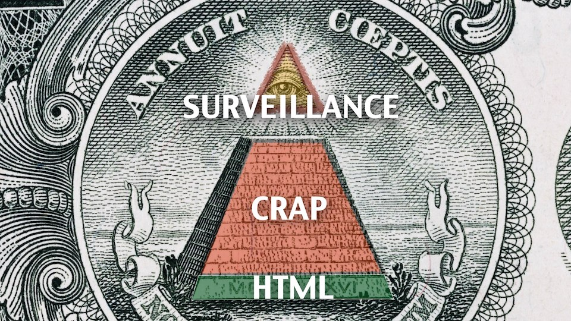

Wherefore Quarto?
The more complex your systems become, the more you need
a human to look at the bigger picture and make decisions.
Alice Goldfuss
There will come a point where the accumulated
complexity of our existing systems is greater than the complexity
of creating a new one. Ryan
Dahl
It is time to unmask the computing community as a
Secret Society for the Creation and Preservation of Artificial
Complexity.
Edsger W. Dijkstra
Give the game away. Brian
Eno and Peter Schmidt
